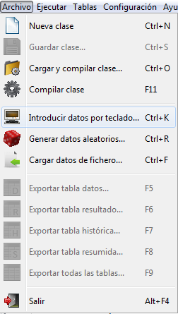
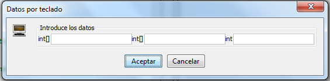
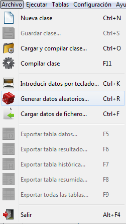
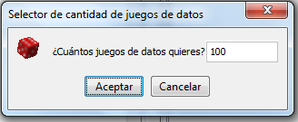
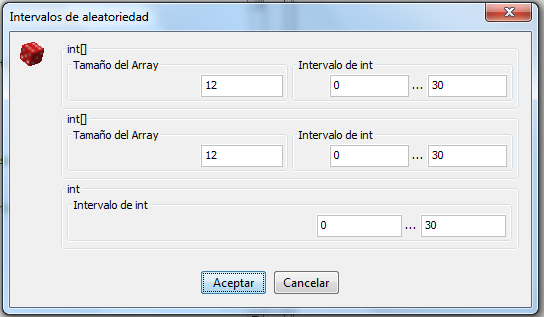
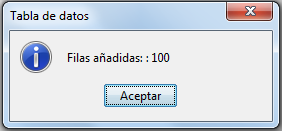
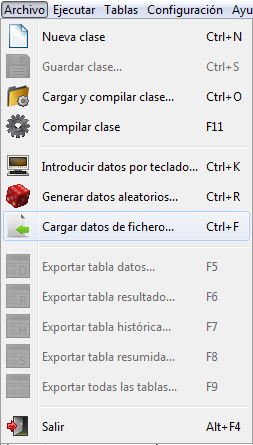
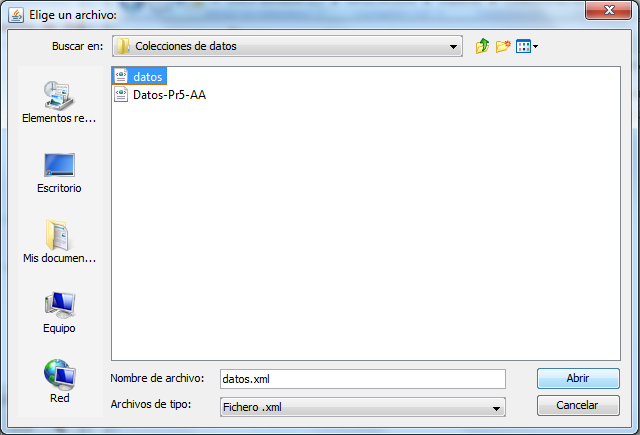
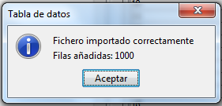

volver
Cargar datos
Introducir datos por teclado
Seleccione desde la barra de menus.

A continuación introduzca los datos que desea utilizar, y pulse "Aceptar".

Generar datos aleatorios
Seleccione desde la barra de menus.

A continuación introduzca el número de datos que desea generar.

Después introduzca los intervalos de aleatoriedad de los datos que desea
generar. Si no se
introducen valores nuevos, los datos se generan dentro de los intervalos por defecto.

Para finalizar la carga de datos pulse el botón "Aceptar". Tras ello, se
muestra un mensaje de información con el número de datos generados:

Cargar datos de fichero
Seleccione desde la barra de menus.

A continuación seleccione el fichero de datos que desea utilizar, y pulse el botón "Abrir".

Tras ello, se mostrará un mensaje de información con el número de datos importados:

Nota:
Los archivos de datos son ficheros .xml cuyo formato se indica en la sección Formato ficheros.
16 de Septiembre de 2016